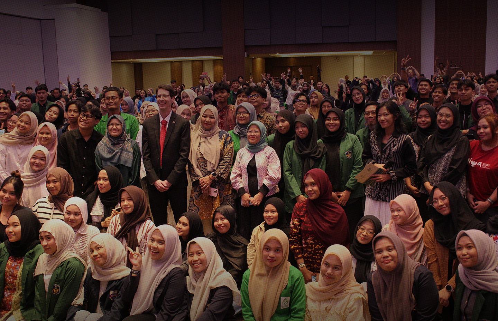

Peran Pemuda dalam Mendukung Presidensi G20 Indonesia
Tahun ini, Indonesia untuk mendapatkan tanggung jawab besar sebagai presidensi...
More Information

Indonesian Youth Diplomacy (IYD) is an Indonesia-based non-profit and non-political youth organization that seeks to promote international exposure for Indonesian youths through inclusive empowerment. Established in 2013, IYD was originally a platform that connected alumni of Y20 delegates from Indonesia.
More Information
Indonesia Youth Diplomacy Local Chapter South Sulawesi is a youth-driven community established in 2023 during Indonesia’s ASEAN Chairmanship. As part of Indonesia Youth Diplomacy (IYD), we aim to strengthen youth engagement in diplomacy by increasing awareness of global issues, expanding opportunities for young people, and creating accessible spaces for collaboration, self-development, and political literacy in South Sulawesi.
Through various partnerships and collaborations with institutions such as the Australian Consulate-General in Makassar and Forum Pemimpin Perempuan Makassar, we continue to bridge global conversations with local engagement while creating accessible spaces for youth empowerment, collaboration, and diplomatic discourse.


This is a collection of writings by
Indonesian youth who are members of
Indonesian Youth Diplomacy (IYD).
Tahun ini, Indonesia untuk mendapatkan tanggung jawab besar sebagai presidensi...
More Information
Tahun ini, Indonesia untuk mendapatkan tanggung jawab besar sebagai presidensi...
More Information
Tahun ini, Indonesia untuk mendapatkan tanggung jawab besar sebagai presidensi...
More Information